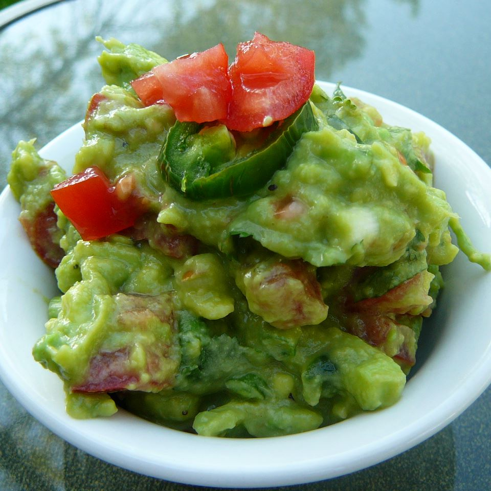

How to do Guacamole

Description
Just ripe avocados and a handful of flavorful mix-ins. Serve it as a dip at your next party or spoon it on top of tacos for an easy dinner upgrade.
Ingredients
- 2 avocados, peeled and pitted
- 1 cup chopped tomatoes
- ¼ cup chopped onion and ¼ cup chopped cilantro
- Lime juice
Steps
- Mash avocados in a bowl until creamy.
- Mix tomatoes, onion, cilantro, lemon juice, add jalapeno pepper for better taste into mashed avocado until well combined; season with salt and black pepper.